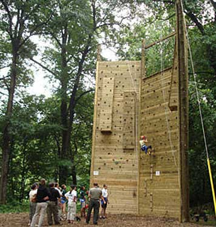

The Places You'll Go!
Allen Pond Park
|  |
Cost: Free!
|
| Alley Pond Park is the second largest park in Queens. The sprawling park offers playgrounds, ballfields, ponds, and picnic areas (and, yes, rundown bathrooms), but it is wonderfully wild too. When strolling on the park's hilly forest paths, you can fall for the illusion that you're in upstate New York, not eastern Queens, maybe 100 feet from the Cross Island Parkway. Plus, there's a great tennis club and New York City's largest ropes course. |